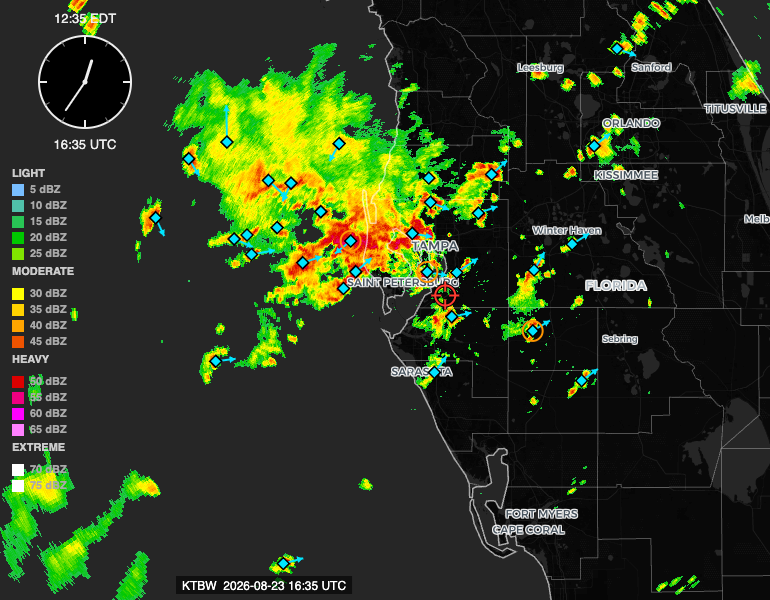
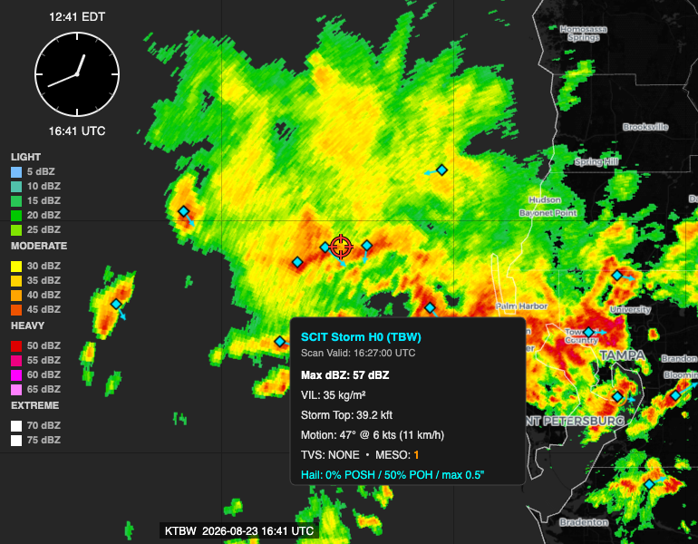

A new layer that puts real per-cell motion, rotation detection, hail probability, and storm-top height on the map — pulled directly from the WSR-88D's own onboard tracking algorithm, the same one the National Weather Service reads.
Every WSR-88D radar runs a storm-cell identification and tracking algorithm onboard, as part of its normal operation — it's how the National Weather Service itself gets per-storm motion, rotation, and hail signals without anyone eyeballing the raw reflectivity. That output is a public product. RadEcho now pulls it directly and puts it on the map as its own layer: Show NOAA Storm Attributes (SCIT), in the legend below the radar controls.
Turn it on and every tracked storm cell in view gets a marker showing where it's heading, whether it's rotating, whether it's showing tornado-scale rotation specifically, and — on click — its hail probability, vertically integrated liquid, and storm-top height.

A marker appears at each tracked cell's center, with an arrow pointing in the direction the storm is currently moving. A marker with no arrow means NOAA's own algorithm reported 0 kt of motion for that cell — not a missing data point.
Click any marker for the full detail popup: hail probability, vertically integrated liquid (VIL — a proxy for how much water and ice the storm is holding aloft, and a real severity indicator), and storm-top height.

Reflectivity alone tells you where it's raining and how hard. It doesn't tell you which of several nearby cells is actually rotating, which one is heading toward a specific spot, or which one is producing the most hail. This layer answers those questions directly, using the same detection logic the radar's operator would see — useful for anyone planning around a storm's path rather than just watching color move across a map: which cell to watch, which direction it's headed, and whether it's the kind of cell that warrants real concern versus routine heavy rain.
The layer works on both the current live frame and while animating back through older frames — each historical frame shows the storm attributes NOAA reported for that scan, matched to the radar volume's own timestamp within the source data's real update cadence.
This comes from Iowa Environmental Mesonet's public archive of the National Weather Service's Level III SCIT product — not something RadEcho computes itself. It carries IEM's own disclaimer, shown directly in the legend: this information is provided without warranty, and its future availability isn't guaranteed by Iowa State University.
Like every non-radar layer in RadEcho, this ships unchecked. Turn it on from the legend whenever you want it.
Sign in with GitHub to comment. Threads live in this repository's Discussions.